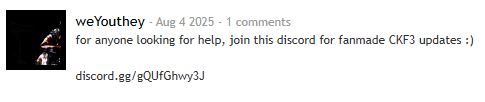

"Chicken Fortress is a Half-Life mod that ported the Team Fortress 2 to GoldSRC engine."

- Published to ModDB by hzqst, goodman3, stay & yuxuanchiadm.
The project started around 2010, as another way to play when TF2 was not Free to Play (F2P) in Steam and required high PC specs at the moment. It got dedicated servers principally in China and used cstrike (Counter-Strike) as base. So yeah, its like a mod of a mod.
In 2015 the third version of it got released, but after May 2017, the mod got lacked of updates due to occupations from their creators to a point that it fall down to death. So they left the Source Code in GitHub for any GoldSrc modder, and interested ones decided to keep it alive, together. - That's why this website was made.

Meet The Modders
 weYouthey - Discord, fixing weapons animations, disable random damage spread option, bots development & misc. SaintSoftware,
weYouthey - Discord, fixing weapons animations, disable random damage spread option, bots development & misc. SaintSoftware,  xModea & TemporaryUsername - Testing & giving apportments to the mod.
xModea & TemporaryUsername - Testing & giving apportments to the mod.Extras
Download
 < u spin me right 'round baby right 'round
< u spin me right 'round baby right 'roundSee ya' there.. uh. Chucklenuts!